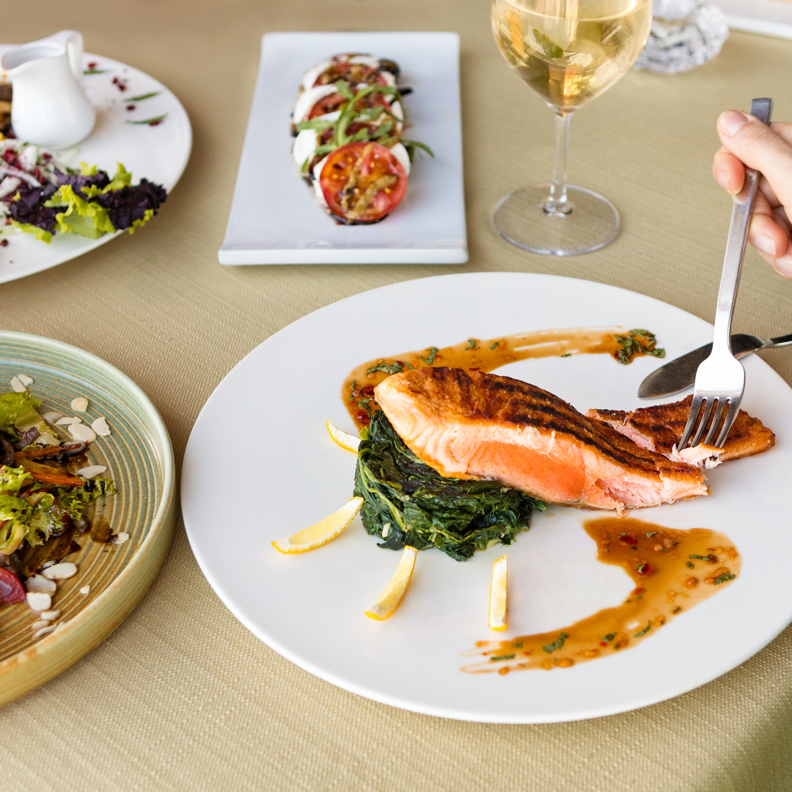

Diet Food Recipes
If one of our goales is to cook more at home to stick to our weight loss efforts, we'll want to set myself up for success.A key part of that is making sure we've got an arsenal of new healthy dinner recipes to whip up that are delicious.

Slow Cooker Pasta
Ingredient
Add all Ingredient except the onions,seafood and pasta to the slow cooker.Stir to mix well.Soak the cashews in water overnight. If you do not have time to, you can also bring a small pot of water to a boil, remove it from heat and add in the cashews. Allow them to soak until you blend the sauce together

Loaded Cauliflower
Ingredient
1.25 1b Cauliflower head, cut into florets,green onion,chopped into the green and white partds.While the cauliflower is roasting, make the cheese sauce: Add butter, the white parts of the green onions, and the garlic cloves to a skillet on medium heat.

Healthy Chicken Soup
Ingredient
½ Tbsp avocado or coconut oil, 1 small yellow onion, diced
1 small red bell pepper, diced.Heat a large pot over medium-high heat. Once hot, add in the avocado or coconut oil. Next, add the peppers, onion, and garlic to the pot. Saute for 3-4 minutes until the onions start to become translucent.